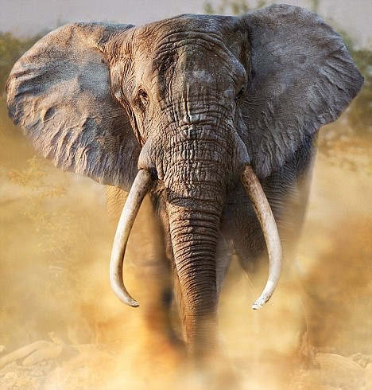
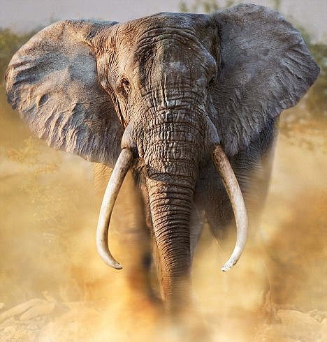

About Us
hello I am ayush me and my little brother make this Website owr Website is created for some Knowlege about General Knowlege etc...!!!!
KNOWLEGE THINKS.....!!!
1-TOP 10 MOST DANGEROUS ANIMALS [NOTE: PDF DOWNLOAD AT LAST]
1. Mosquitoes - They are responsible for more human deaths each year than any other animal, transmitting diseases such as malaria, dengue fever, and Zika virus. 2. Humans - Sadly, humans are responsible for the most deaths on the planet, either
directly or indirectly through actions like war, violence, and pollution.
3. Snakes - Venomous snakes like the black mamba, king cobra, and inland taipan are
responsible for thousands of deaths each year.
4. Dogs - Domestic dogs account for a significant number of fatalities each year, mainly
due to dog bites and attacks.
5. Crocodiles - These large reptiles are known for their aggressive behavior and powerful
jaws, and are responsible for numerous human fatalities each year.
6. Hippopotamuses - Despite their herbivorous diet, hippos are incredibly territorial and
can be extremely aggressive, causing many deaths in Africa each year.
7. Tsetse Flies - These bloodsucking insects are responsible for transmitting the deadly
sleeping sickness disease to both humans and animals.
8. Box Jellyfish - The venom of this jellyfish species can cause heart failure and death in
just a few minutes.
9. Cape Buffalo - These large African herbivores are known for their unpredictable
nature and deadly horns, causing numerous deaths each year.
10. Elephants - Despite being intelligent and gentle creatures, elephants can become
very dangerous when they feel threatened, causing fatalities in many parts of the world. 
CLICK HERE TO DOWNLOAD PDF
2. Humans - Sadly, humans are responsible for the most deaths on the planet, either
directly or indirectly through actions like war, violence, and pollution.
3. Snakes - Venomous snakes like the black mamba, king cobra, and inland taipan are
responsible for thousands of deaths each year.
4. Dogs - Domestic dogs account for a significant number of fatalities each year, mainly
due to dog bites and attacks.
5. Crocodiles - These large reptiles are known for their aggressive behavior and powerful
jaws, and are responsible for numerous human fatalities each year.
6. Hippopotamuses - Despite their herbivorous diet, hippos are incredibly territorial and
can be extremely aggressive, causing many deaths in Africa each year.
7. Tsetse Flies - These bloodsucking insects are responsible for transmitting the deadly
sleeping sickness disease to both humans and animals.
8. Box Jellyfish - The venom of this jellyfish species can cause heart failure and death in
just a few minutes.
9. Cape Buffalo - These large African herbivores are known for their unpredictable
nature and deadly horns, causing numerous deaths each year.
10. Elephants - Despite being intelligent and gentle creatures, elephants can become
very dangerous when they feel threatened, causing fatalities in many parts of the world. 
CLICK HERE TO DOWNLOAD PDF